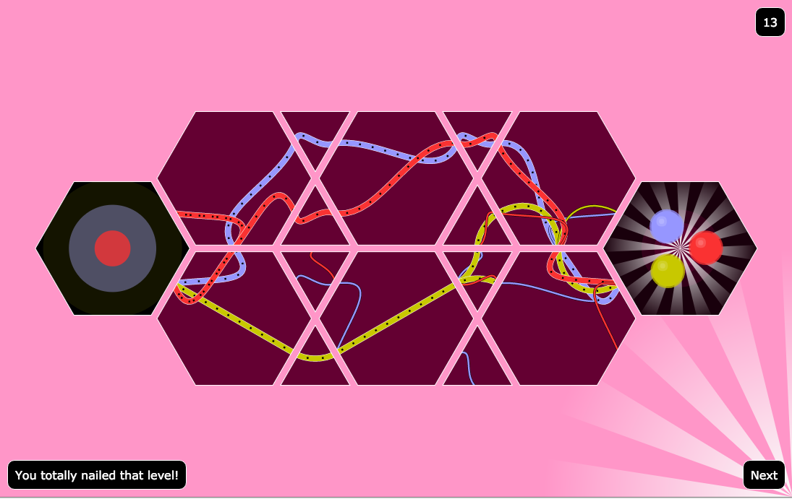
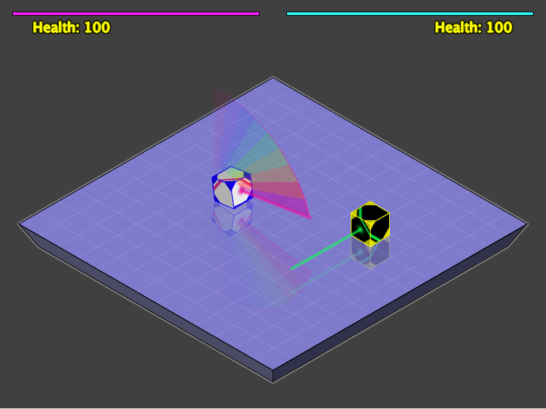
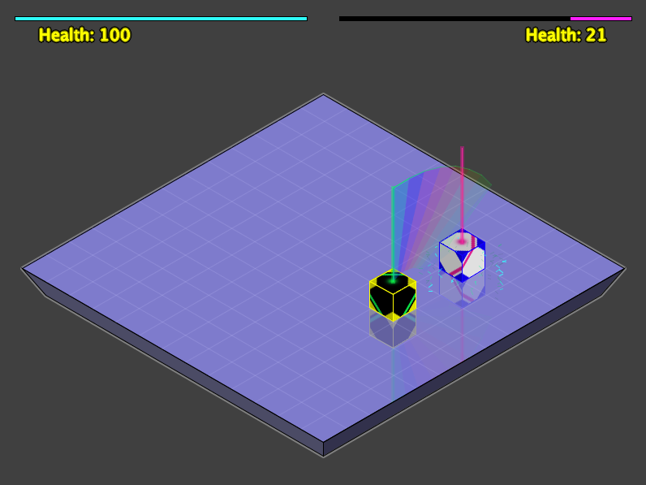

Games
-
Game 0 - A chromatic tile puzzle game. Playable online here.

I wrote this in ClojureScript as I wanted an excuse to play with the language.
I was amazed at how like Clojure it is (apart from the host language interop. and the runtime they're basically identical.)
-
Game 1 - A cube jousting game. Source code available here: GitHub repository


I wrote this some years ago as a Java applet (back when Java applets were still a thing).
There are no dependencies beyond the JDK.
You'll need to compile and run it yourself though.
./games
.